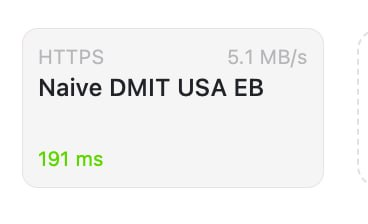

曦月🍥
@xyu1182202
@realNyarime 怎么感觉免费的反而没事🥰

奶昔🥤
@realNyarime
那4家顶级机场，你以为你买了某D某C，结果他们都是一个上游，连带着DDCC一起出事
稳定性不如一般机场，可用度不如一元机场，到最后不如买VPS自建
为你好的人，才会劝你用国际漫游，特殊时期的护身符。我想中国不会像朝鲜一样直接砍「国际漫游」吧，如果那一天到来，离光明网不远了 https://t.co/B0wy4KGffI